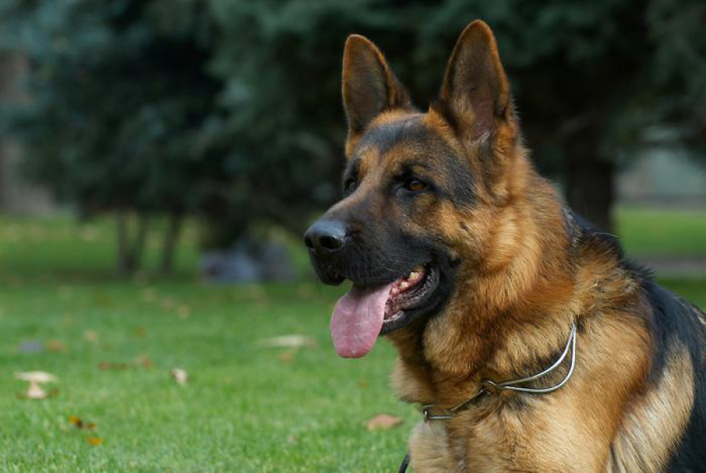
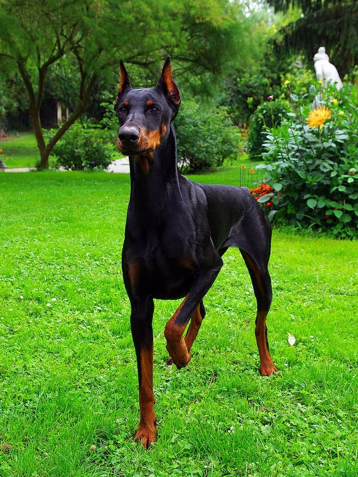

Бордер-колі – це вівчарська порода собак, виведена на кордоні Англії й Шотландії, звідки й назва її назва “Бордер”, що в перекладі з англійської означає “кордон”.
Бордер-коллі визнані найрозумнішими та найкращими собаками у світі і причиною цього є їхній розум, темперамент і неперевершений інстинкт пастуха. Часом кажуть, що бордер-колі випасає все, що рухається: овець і кішок, дітей і автомобілі. Це собачий “трудоголік”, який не може жити без роботи. Ці собаки віддані, уважні і чутливі. Вони люблять свою сім’ю, і заради неї ці собаки готові виконувати будь-які команди.
Пудель
Сьогодні пуделі – це порода декоративних собак, однак раніше їх використовували для полювання. Ця порода прославилася своєю довгою, хвилястою та м’якою шерстю – собаки схожі на пухнасті та легкі хмаринки. Собаки бувають різного забарвлення – білі, сріблясті, коричневі та чорні.
У пуделів чудовий характер. Вони прекрасно ладнають з усіма членами родини, люблять бавитися з дітьми. Обожнюють плавати і гратися з м’ячем. Крім того, ці собаки слухняні і легко піддаються дресируванню.
Німецька вівчарка

Ця популярна порода собак була виведена в Німеччині у 1899 році. Ці собаки мають гарний нюх і мужній характер, витривалі і працьовиті. Собака не любить байдикувати і довго спати. Німецькі вівчарки – пошукові й прикордонні собаки, сапери й митники, розвідувачі-рятувальники, поводирі сліпих та охоронці.
Крім того, це вірний захисник. Якщо німецька вівчарка відчує, що хтось хоче фізично образити вас, вона не буде чекати команду до дії, а почне гавкати на противника. А в ситуації крайньої небезпеки – накинеться на нього. Хоча загалом це досить спокійна і неагресивна собака
Золотистий ретривер
Золотистий ретрівер – це порода мисливських собак, яку вивів у XIX ст. англійський аристократ лорд Твідмаут. Вони легко піддаються дресируванню, дуже слухняні і кмітливі. Крім того, ретрівери ніколи не проявляють агресію до людей або до інших собак. Заводячи його, можна бути впевненим у власній безпеці – саме тому їх дуже часто беруть в сім’ї з дітьми.
Золотисті ретривери працюють в поліції і в рятувальних службах, шукають наркотики і контрабанду. Через слухняність та миролюбивий характер ретріверів також використовують в терапевтичних цілях і для реабілітації хворих.
Доберман-пінчер

Добермани були виведені в Німеччині у XIX ст. і названі так на честь свого “винахідника” – Фрідріха Луїса Добермана. В першу чергу, доберман – це службовий та сторожовий собака. Його часто використовують на службі у вартових та поліцейських. На початку двадцятого століття доберман навіть був офіційно визнаний поліцейською собакою.
Доберман – собака дуже спритна, розумна, сильна і смілива. Він легко стане членом вашої родини, однак, заводити його у тих сім’ях, де є маленькі діти, не рекомендують. Крім того, доберман обожнює тривалі прогулянки, тож вимагатиме від вас часу на тривалий вигул.